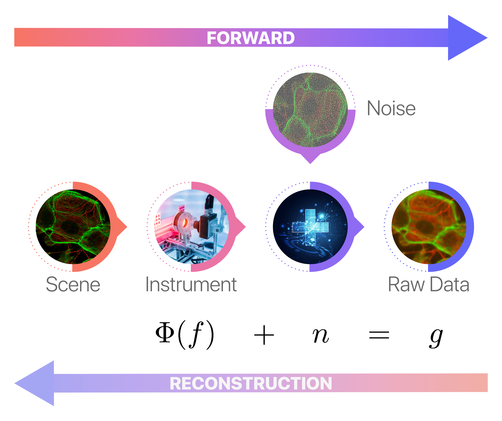
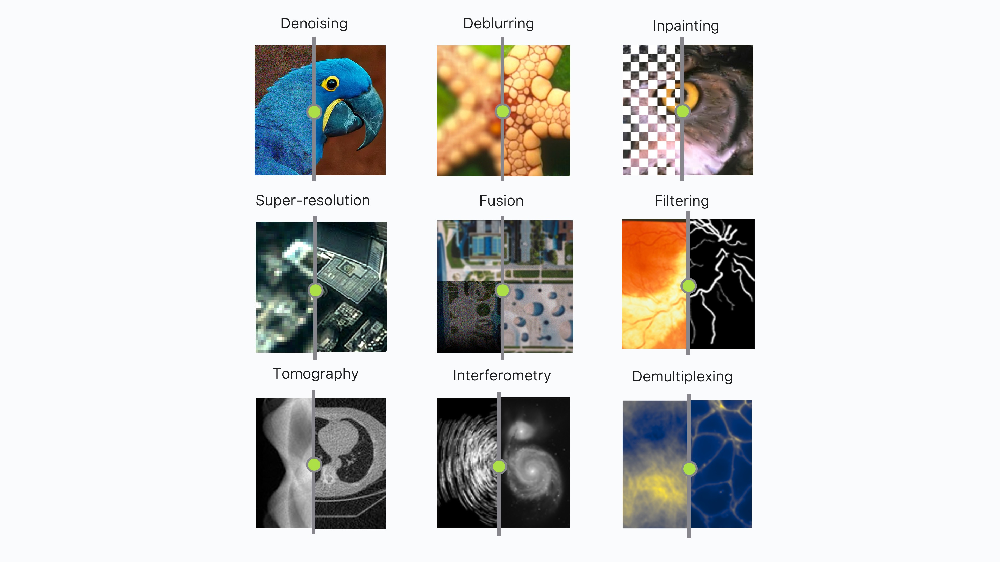
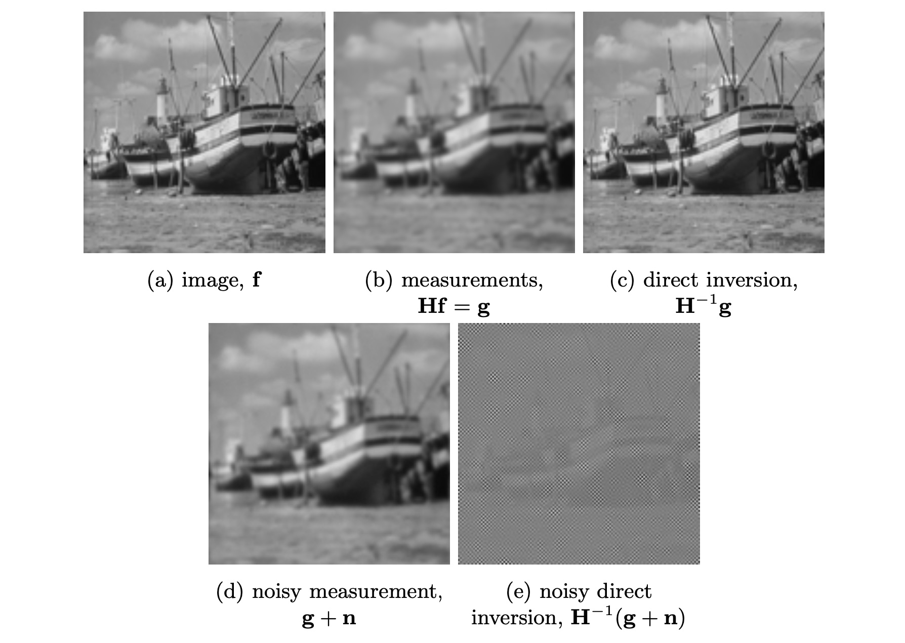
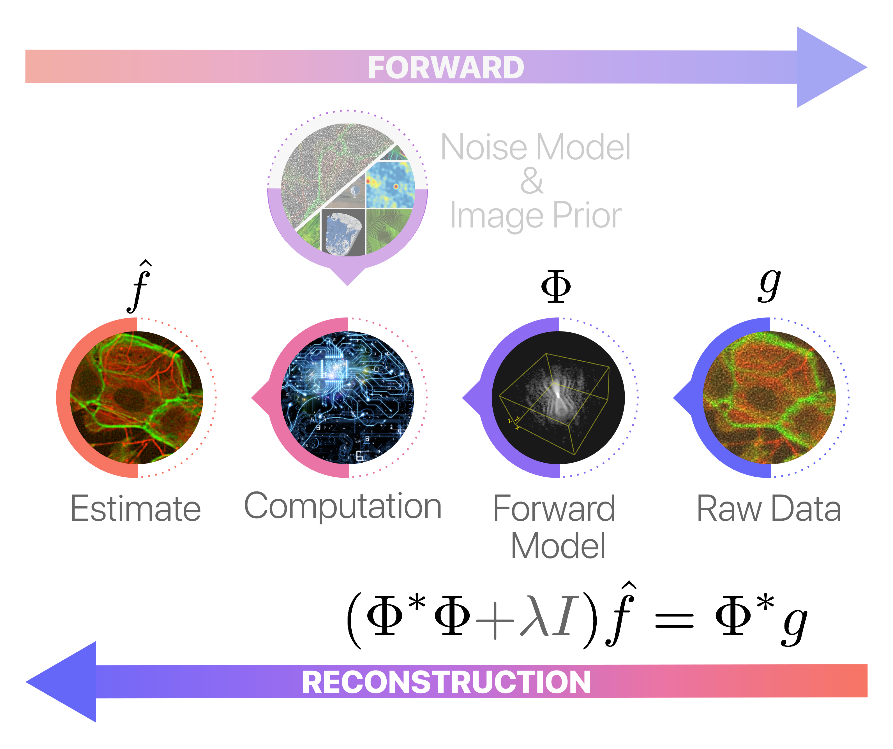
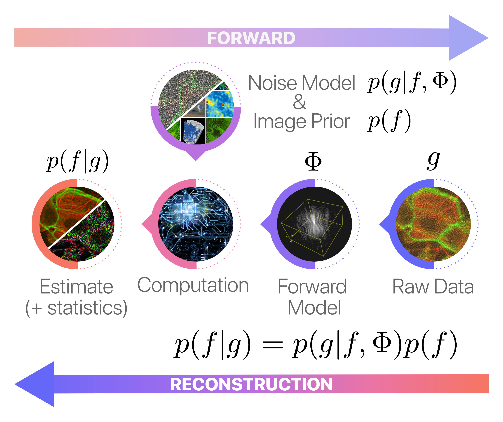
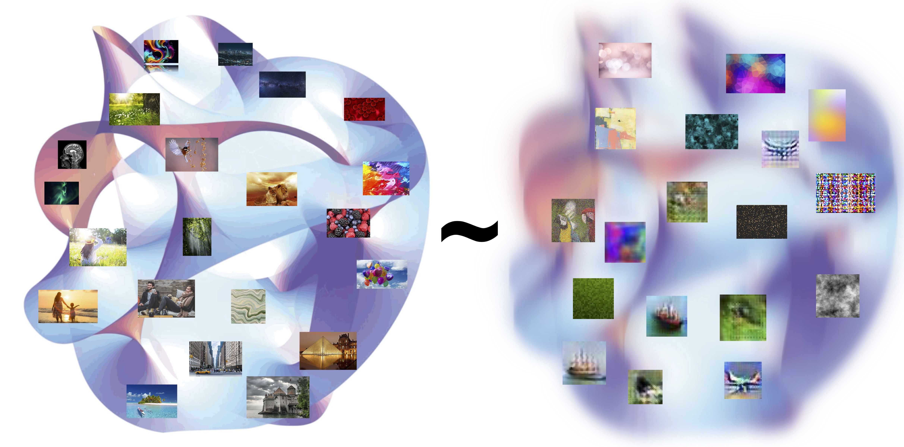
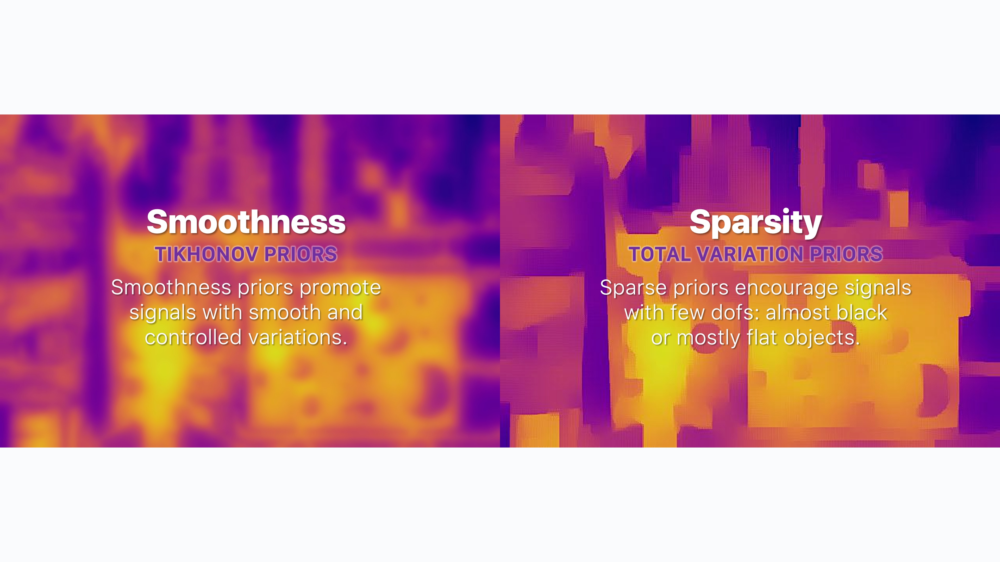

Computational Imaging in a Nutshell#
The Multifaceted Realm of Computational Imaging#
Digital image restoration and enhancement techniques—concisely termed as image reconstruction methods—serve as the linchpins in the evolving landscape of computer vision. These techniques endeavor to rejuvenate degraded or partially captured raw images, transforming them into superior-quality versions better aligned for visualization or intricate image analysis. The resultant images often boast enhanced resolution and perceptual quality, diminished noise and blur, and may even feature completions in areas where data is lacking.
At the core of many image reconstruction techniques lies the challenge of solving a mathematical inverse problem. Here’s how it works: an object of interest—be it a cell, a scene, or something else—is observed through an acquisition system, such as a microscope or camera. This system collects data that is often both noisy and blurred. The ultimate objective is to reconstruct the original object from these imperfect measurements, effectively “inverting” the acquisition process to obtain a clearer image or representation. The diagram below succinctly illustrates an inverse problem setting:

where:
\(f\) denotes the unknown image,
\(\Phi\) is an operator modelling the acquisition system (typically linear),
\(n\) is some random noise, typically additive and zero-mean.
Common examples of computational imaging tasks include for example:
Image Denoising: The process of eliminating noise artifacts to create a cleaner, crisper image.
Image Deblurring: Restoration of a sharp image from a blurry input, enhancing focus and detail.
Image Inpainting: Reconstructing missing or damaged regions within an image, often used for tasks like replacing lost blocks during coding and transmission or erasing watermark/logo overlays.
Image Super-Resolution: Elevating the resolution of an image or an imaging system to provide finer detail.
Image Fusion: The merging of two or more degraded images of the same object or scene into a single image that exceeds the quality of any individual input.
Image Filtering: Modifying an image to accentuate particular features of interest, such as points, lines, or shapes.
Tomographic Reconstruction: Rebuilding an image from its lower-dimensional projections, known as sinograms in the context of CT or PET scans.
and many more…

The Dawn of Computational Imaging#
Traditional software-based imaging pipelines have often relied on direct inversion techniques. These methods provide a rough approximation of the pseudoinverse of the sensing operator that models the image acquisition system. While these approaches are fast, intuitive, and relatively scalable, they are fundamentally limited in terms of accuracy, frequently resulting in poorly resolved images marred by significant reconstruction artifacts.

One way to counteract the numerical instability inherent in the use of the pseudo-inverse is by solving dampened normal equations:

However, a key limitation of such conventional reconstruction schemes is their fixed-function design. This rigidity prevents the incorporation of any prior knowledge about the observed scene, such as its smoothness, sparsity, or high compressibility in certain domains.
Bayesian Computational Imaging#
State-of-the-art image restoration techniques generally rely on powerful and universal image priors that promote specific perceptual or structural features commonly found in natural images. These effectively regularise the ill-posed inverse problem and improve reconstruction accuracy. This is typically achieved by means of handcrafted Bayesian estimation problems, built from the composition of universal mathematical building blocks (e.g., mathematical transforms and cost/regularisation functionals). These Bayesian problems assess an optimal trade-off between a likelihood term, which controls the reconstruction fidelity in terms of the data and its statistics, and a prior term, which promotes physical plausibility of the reconstruction. These Bayesian problems are generally solved using sophisticated iterative first-order proximal-splitting methods and are well-suited for uncertainty quantification through Markov Chain Monte Carlo (MCMC) samplers.

At their core, image priors aim to approximate the intricate and high-dimensional manifold of natural images.

Historically, this approximation was often achieved using methods like Tikhonov or Total Variation priors. These traditional priors emphasized simple, physically-admissible behaviors such as smoothness or sparsity within a specific domain.

The Deep Learning Revolution#
The rise of deep learning has been a game-changer in the field of computational imaging, resulting in a new era of highly effective, data-driven image priors. These advanced priors are capable of learning the manifold of natural images much more fidely than model-based priors. Consequently, contemporary techniques for image restoration, enhancement, and manipulation have reached unprecedented levels of performance. In fact, the advancements have been so significant that some experts speculate we may have arrived at a performance and accuracy plateau:
Recent studies suggest that modern image denoising methods are approaching the optimally possible performance in denoising. (Romano et al., 2017)

The Adoptability and Usability Crisis of Computational Imaging#
Despite the remarkable strides made in the field, advanced image reconstruction technologies face significant obstacles in terms of adoptability, usability, and reproducibility, particularly in applied imaging sciences. A large portion of the computational imaging techniques cited in academic literature are hyper-specialized for specific applications, and many remain in the proof-of-concept stage. These methods often necessitate expert knowledge to calibrate, utilize, and integrate into production pipelines. Further, many lack support for N-dimensional images, distributed out-of-core computing, and hardware acceleration, which restricts their practical applicability.
To accelerate the path from research prototyping to production deployment in imaging science, there is hence a strong need to rethink traditional imaging pipelines, with an emphasis on scalability (for both CPUs and GPUs) and modularity (to allow for high customizability and coexistence of both standard and advanced techniques). This requires in particular to transition from monolithic to microservice ones with highly maintainable, testable, optimised, loosely coupled, hardware-agnostic and universal software components. Such a design of the imaging pipeline should enable the rapid and reliable prototyping/scaling/deployment of complex image reconstruction methods and deliver on their many promises beyond academic environments. This core objective is, in essence, the very raison d’être of Pyxu.
Pyxu: High-Performance Computational Imaging with Python#
Pyxu is an open-source computational imaging software framework for Python with native support for hardware acceleration and distributed computing. The latter adopts a modular and interoperable microservice architecture providing highly optimised and scalable general-purpose computational imaging functionalities and tools, easy to reuse and share across imaging modalities. These include notably a rich collection of common sensing operators and cost/penalty functionals, which can easily be combined via an advanced operator algebra logic to handcraft tailored inverse problems mappable to the generic state-of-the-art (stochastic) proximal methods of the library’s comprehensive algorithmic suite. This suite simplifies the user experience, automatically calculating gradients, proximal operators, and hyperparameters through the operator algebra logic or guided by best practices.
At its foundation, Pyxu takes advantage of an array of high-performance computing (HPC) tools from the Python ecosystem to assure superior performance and scalability. For instance, Pyxu’s computational logic operates across multiple precisions and fully supports Duck arrays—array-like entities compliant with the NumPy API standard. This compatibility encompasses not just traditional CPU-bound NumPy arrays, but also extends to GPU-bound CuPy arrays and distributed or out-of-core chunked Dask arrays. Internally, the framework employs a module-agnostic codebase, dispatching routine calls to either NumPy, CuPy, Dask, or any other NumPy-compatible library based on the type of array in operation. As a result, Pyxu offers native support for both hardware acceleration and distributed computing within a singular, easily maintainable, testable, and readable Python codebase.